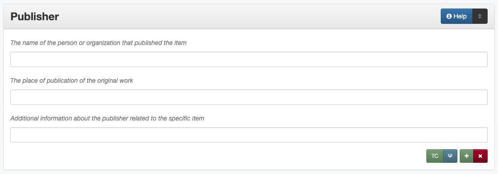

Publisher
Definition
An entity responsible for making the resource available: the publisher of the original work.
Where Can the Publisher Information be Found?
A publisher can be a publishing house, an organization, a service, a corporate body, a government agency, a museum, a historical society, a university, a project, a repository, a person, etc. and may be found on:
a copyright page
an inside cover of a book
a colophon
a logo stamped on a photograph, map, or cover of a book
accompanying or supplementary information
How Publisher Works in the Metadata Form
- Parts:
Publisher name – text field
Publisher location – text field
Publisher information – text field
- Repeatable?
Yes - to include multiple publishers, click ‘Add’ to repeat all field parts
- Required?
No (more information)
How Should the Publisher be Filled in?
General Publisher Rules
If no publisher statement is present on the resource or its documentation, leave the field blank
When relevant, multiple publishers can be included, but it may be appropriate for a second publisher to be listed as a contributor instead (for example, a “printer” or “distributor”)
Publisher Names
Guideline |
Examples |
|---|---|
|
United States. Government Printing Office. |
|
|
|
Roberta Wright Rylander |
For non-government or single-level bodies: |
|
|
Lewis Publishing Company |
|
|
|
[Houston] Chamber of Commerce |
|
Name: University of North Texas
Info: UNT
|
For hierarchical agencies or entities: |
|
|
Fort Wolters (Tex.). United States Army Primary Helicopter School. |
|
American Chemical Society. Division of Chemical Information. |
|
Texas. Legislature. Senate. Committee on Transportation. |
|
|
For United States agencies: |
|
|
[United States.] Army Information
Branch.
United States. Department of
Commerce. Office of Technical
Services.
U.S. Atomic Energy Commission
|
|
United States. Central Intelligence Agency. |
For non-U.S. agencies: |
|
|
Name: Japan. Kankyōshō.
Info: [Japan] Ministry of the
Environment
|
China (Republic : 1949- ). Huan jing bao hu shu. |
|
|
|
Publisher Location
Guideline |
Examples |
|---|---|
|
Sewanee, Tennessee
Austin, Texas
|
|
London, England |
|
United States
Idaho
|
|
[Washington D.C.] |
Publisher Info
Info is not required as part of the publisher entry
This field is only for information about the publisher listed in or directly related to the object
It is not necessary to do research to find information; this field is only used for readily-available notes
Guideline |
Examples |
|---|---|
|
Raphael Tuck & Sons Co., Ltd. |
“A Multipro Reprint” |
|
Printed by The Bandera Bulletin for Frontier Times Museum |
Other Examples:
Children’s book: More Fun For Everyone
Publisher: Raphael Tuck & Sons
Location: London, England
Information: “London, Paris & New York. Designed at the Studios in England and printed at the Fine Art Works in Bavaria.”
Photo-journal: A Camera Trip Through Camp Wolters: a picture book of the camp and its activities
Publisher: The Ullman Company
Location: Brooklyn, New York
Information: “This book planned and printed in Gravure by the Ullman Company, Brooklyn, N. Y.”
Lion’s Roar, Yearbook of the North Texas Laboratory School, 1958
Publisher: North Texas Laboratory School
Location: Denton, Texas
Publisher: Taylor Publishing Co.
Location: Dallas, Texas
Information: “Lithographed by Taylor Publishing Co.”
U.S. Geological Survey Map: Locations and Depths of the Artesian Wells of the Black and Grand Prairies of Texas
Publisher: A. Hoen & Co.
Location: Baltimore, Maryland
Information: “Lith. by A Hoen & Co.”
French opera score: Nouvelles Poesies Morales sur Les Plus Beaux Airs de la Musique Francoise et Italienne avec la Basse.[…]
Publisher: N. Lottin & J. H. Butard
Location: Paris, France
Information: “Chez Ph. N. Lottin, & J. H. Butard, Imprimeur - Libraries, rue Saint Jacques, proche de S. Yves, à la Verité”
World War II Poster: This man is your friend: Dutch sailor: he fights for freedom
Publisher: United States. Government Printing Office.
Location: Washington D.C.
Inventory of county records, Young County courthouse, Graham, Texas
Publisher: North Texas State University. Center for Community Services.
Location: Denton, Texas
Publisher: Texas State Library. Archives Division.
Location: Austin, Texas
Information: Printer [and distributor]
Pamphlet: An Appeal to the People of Massachusetts, on The Texas Question.
Publisher: Charles C. Little and James Brown (Firm)
Location: Boston, Massachusetts
Resources
Library of Congress
Worldcat via FirstSearch (Accessible to UNT staff/students)
More Guidelines:
Comments
Name fields are connected to the UNT Name App, which will try to match text against local authority files. Editors should always choose an authorized form from the list if it is available.
If the publisher and the creator are the same, repeat the name in the Creator element.
In the case of outsourcing, the name of the contract agency performing digital services for a publisher could be recorded in the Note element.
Publishing information about a resource from which the current resource is derived should be placed in the Source element.
For place(s) associated with the intellectual content of the resource, use the Coverage Place Name sub-element.